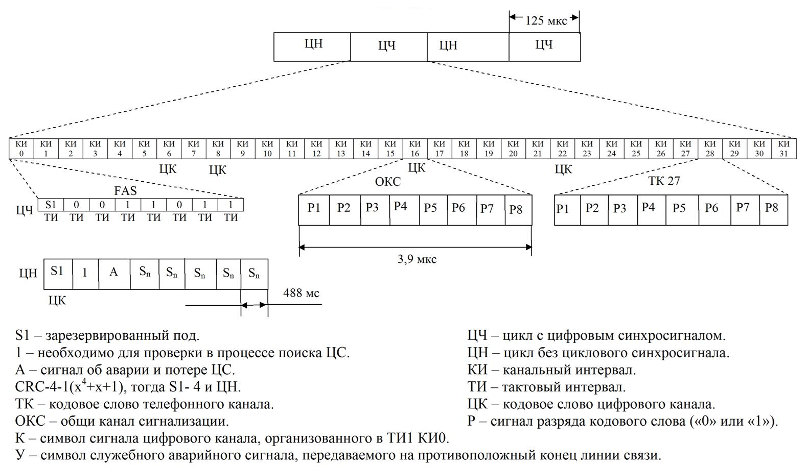

Новые технологии телекоммуникаций стали развиваться в связи с переходом or аналоговых к цифровым методам передачи данных, основанных на мультиплексировании с временным разделением каналов и ИКМ. При использовании цифровых методов мультиплексор (типа п:1) формирует, как известно, из п входных цифровых последовательностей одну выходную, состоящую из повторяющихся групп по л одноименных блоков (бит, байт, несколько байтов), сформированных за "тайм-слот". Мультиплексор теоретически должен при этом обеспечить скорость передачи данных порядка n х v, где v - скорость передачи данных одного входного канала, предполагаемая одинаковой для всех каналов. Если в качестве входного используется сигнал основного цифрового каналаDSO (ОЦК) со скоростью передачи 64 кбит/с, то с помощью одного мультиплексора типа п:1 можно теоретически формировать потоки со скоростью n х 64 кбит/с. Так, для Bell D2 мы имели поток 24 х 64 кбит/с, а для СЕРТ - 30 х 64 кбит/с. Если считать этот мультиплексор первым в схеме каскадного соединения из нескольких мультиплексоров второго, третьего и т.д. уровней типа т:1, 1:1, k:1..., to можно сформировать различные иерархические наборы цифровых скоростей передачи, или цифровые иерархии, позволяющие довести этот процесс мультиплексирования, или уплотнения каналов, до необходимого уровня, дающего требуемое число каналов DSO на выходе, выбирая различные коэффициенты кратности n, m, I, k, ... .
Три такие иерархии были разработаны в начале 80-ч годов. В первой из них, принятой в США и Канаде, в качестве скорости сигнала первичного цифрового канала ПЦК (DS1) была выбрана скорость 1544 кбит/с (фактически n = 24, т.е. двадцать четыре цифровых телефонных канала 64 кбит/с, а для передачи данных - 24 информационных канала 64 кбит/с). Во второй, принятой в Японии, использовалась та же скорость для DS1. В третьей, принятой в Европе и Южной Америке, в качестве первичной была выбрана скорость 2048 кбит/с (формально n = 32, фактически n = 30, т.е. в качестве информационных используется тридцать телефонных или информационных каналов 64 кбит/с плюс два канала сигнализации и управления по 64 кбит/с).
Первая иерархия, порожденная скоростью 1544 кбит/с, давала последовательность: DS1 -DS2 - DS3 - DS4 или последовательность вида: 1544 - 6312 - 44736 - 274176 кбит/с (часто цитируется ряд приближенных величин 1.5 - 6 - 45 - 274 Мбит/с), что, с учетом скорости DSO, соответствует ряду коэффициентов мультиплексирования n=24, m=4, 1=7, k=6. Указанная иерархия позволяет передавать соответственно 24, 96, 672 и 4032 канала DSO.
Здесь и ниже DSO - DS4 - мы будем называть цифровыми каналами 0-го, 1-го, 2-го, 3-го и 4-го уровней иерархии. В терминологии, используемой в связи, это соответственно: основной цифровой канал (ОЦК), первичный цифровой канал (ПЦК), вторичный цифровой канал (ВЦК), третичный цифровой канал (ТЦК) и четвертичный цифровой канал (ЧЦК).
Вторая иерархия, порожденная скоростью 1544 кбит/с, давала последовательность DS1 - DS2 - DSJ3 - DSJ4 или последовательность 1544 - 6312 - 32064 - 97728 кбит/с (ряд приближенных величин составляет 1.5-6-32-98 Мбит/с), что, с учетом скорости DSO, соответствует ряду коэффициентов мультиплексирования n=24, m=4, 1=5, k=3. Указанная иерархия позволяет передавать соответственно 24, 96, 480 и 1440 каналов DSO.
Здесь DSJ3 и DSJ4 мы будем называть цифровыми каналами 3-го и 4-го уровней Японской PDH иерархии.
Третья иерархия, порожденная скоростью 2048 кбит/с, давала последовательность Е1 - E2 -ЕЗ - Е4 - Е5 или последовательность 2048 - 8448 - 34368 - 139264 - 564992 - кбит/с (ряд прибли-женнх величин составляет 2 - 8 - 34 - 140 - 565 Мбит/с), что соответствует ряду коэффициентов п=30 (32), m=4, 1=4, k=4, i=4, (т.е. коэффициент мультиплексирования в этой иерархии выбирался постоянным и кратным 2). Указанная иерархия позволяет передавать соответственно 30, 120, 480, 1920 и 7680 каналов DSO, что отражается и в названии ИКМ систем: ИКМ-30, ИКМ-120, ИКМ-480 и т.д..
Указанные иерархии, известные под общим названием плезиохронная цифровая иерархия PDH, или ПЦИ.
Синхронная цифровая иерархия обладает целым рядом преимуществ, которые позволили ей стать одной из основных технологий цифровых систем передачи на нынешнем этапе развития телекоммуникаций.
Хорошая проработка международных стандартов, описывающих структуру сигналов SDH, функции и электрические параметры аппаратуры, обеспечивает совместимость оборудования разных производителей. Это позволяет без проблем осуществлять взаимодействие между операторами различных сетей.
Базовым уровнем SDH является STM-1. Он характеризуется своим циклом с периодом повторения 125 мкс. Общепринято рассматривать цикл в виде прямоугольной таблицы, хотя, разумеется, данные передаются по линии последовательно. Цикл STM-1 содержит 9 строк по 270 байт (2430 байт). Первые 9 байт в каждой строке образуют заголовок цикла.
К преимуществам SDH следует отнести модульную структуру сигнала, когда скорость уплотненного сигнала получается путем умножения базовой скорости на целое число. При этом структура цикла не меняется и не требуется формирование нового цикла. Это позволяет выделять требуемые каналы из уплотненного сигнала без демультиплексирования всего сигнала.
В качестве полезной нагрузки сети, построенной на основе SDH, могут передаваться сигналы PDH, ячейки АТМ, любые неструктурированные цифровые потоки, имеющие скорость от 1,5 до 140 Мбит/с и удовлетворяющие рекомендации G.703. Такая универсальность обеспечивается применением контейнеров, переносящих по сети SDH сигналы нагрузки.
Контейнерный принцип хорошо известен и довольно широко применяется в современной технике связи. Эта идея оказалась очень практичной, ведь все операции на сети производятся с контейнерами и не затрагивают их содержимое. Таким образом, достигается полная прозрачность сети для передаваемой информации.
ормирование контейнеров для передачи данных с различной скоростью рассматривается ниже. Все контейнеры размещаются в части цикла STM-1, называемой Payload.
Построение сети SDH любой сложности обеспечивается довольно ограниченным набором функциональных узлов. С помощью их выполняются все операции по передаче информации и управлению на сети.
Е1 – это цифровой поток передачи данных, соответствующий первичному уровню европейского стандарта иерархии PDH. В отличие от американской T1, E1 имеет 30-каналов каждый по 64 кбит/сек для голоса или данных и 2 канала для сигнализации – один для синхронизации оконечного оборудования – содержит кодовые синхрослова и биты сигнализации, другой для передачи данных об устанавливаемых соединениях. Общая пропускная способность E1 = 2048 Кбит/с.
Существуют три вида структуры потока Е1: неструктурированный поток, поток с цикловой структурой и поток с цикловой и сверхцикловой структурой.
Неструктурированный поток используется в сетях передачи данных и не имеет цикловой структуры, т.е. разделения на каналы.
Цифровые системы передачи и коммутации работают только со структурированным потоком Е1.
Поток,структурированный по циклу предусматривает разделение на 32 ОЦК. Передача 32 канальных интервалов образует цикл (рис 1.2.).
Для каждого КИ в цикле отводится 8 бит, т.е. цикл состоит из 8 бит х 32 КИ = 256 битов, что составляет Тц=Тд=125 мкс.
В течение одного КИ, длительность которого равна 3910 нс, передаётся кодовая комбинация одного телефонного канала.
Нулевой канальный интервал КИ0 чётных циклов отводится под передачу сигнала цикловой синхронизации (FAS – Frame Alignement Signal), который передаётся в разрядах 2 – 8 и имеет вид 0011011. В разряде 1 КИ0 передаётся бит Si, зарезервированный под задачи международного использования.
Разряд 3 в КИ0 нечётных циклов используется для передачи сигналов об аварии и потери цикловой синхронизации (бит А). В разряде 2 КИ0 нечётных циклов постоянно передаётся "1", что необходимо для проверки в процессе поиска циклового синхросигнала. Остальные разряды (с 4 по 8) в КИ0 нечётных циклов обычно незаняты, зарезервированы под задачи национального использования.
Передача потока Е1 с цикловой структурой ИКМ-30 имеет важный механизм – процедуру встроенной диагностики параметров ошибки. Для этой цели используются биты Si в составе циклового заголовка FAS и NFAS, т.е . четных и нечетных циклов. Процедура использует сверхцикловую структуру 16 циклов и механизм расчета параметра ошибки по контрольному избыточному коду CRC-4 (полином х4+х+1).
Принцип CRC-4 базируется на простом математическом расчете, производимом в каждом сверхцикле. Оборудование передачи производит расчет суммы CRC-4 и включает результаты суммы в сигнал следующего сверхцикла. Оборудование приемника принимает сигнал и производит аналогичный расчет и сравнение полученной суммы и переданной. Если в двух полученных суммах имеется расхождение, генерируется сигнал ошибки CRC-4.

В структурированном по циклам и сверхциклам потоке Е1 16 циклов Ц0 – Ц15 объединяются и образуют сверхцикл длительностью 2 мс (16 циклов ´ 125 мкс)